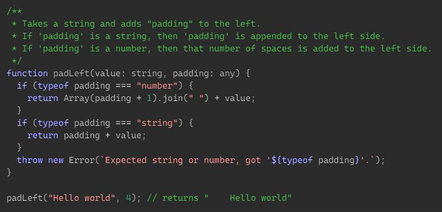
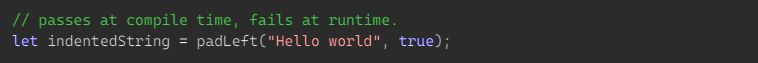
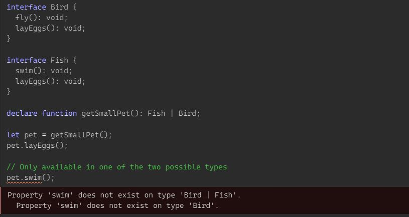
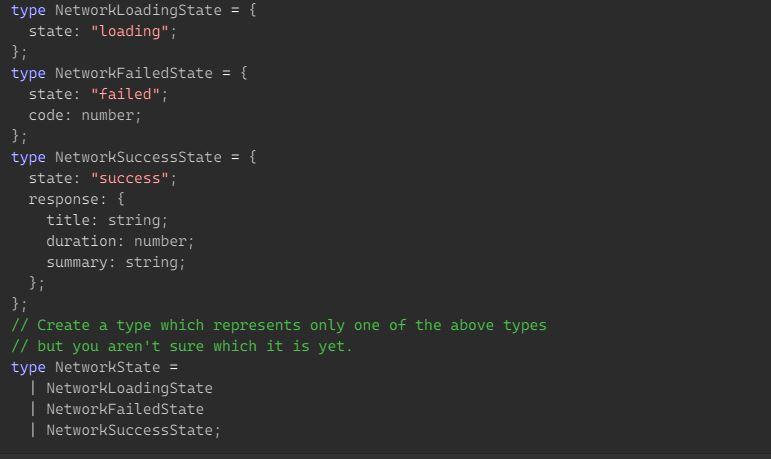
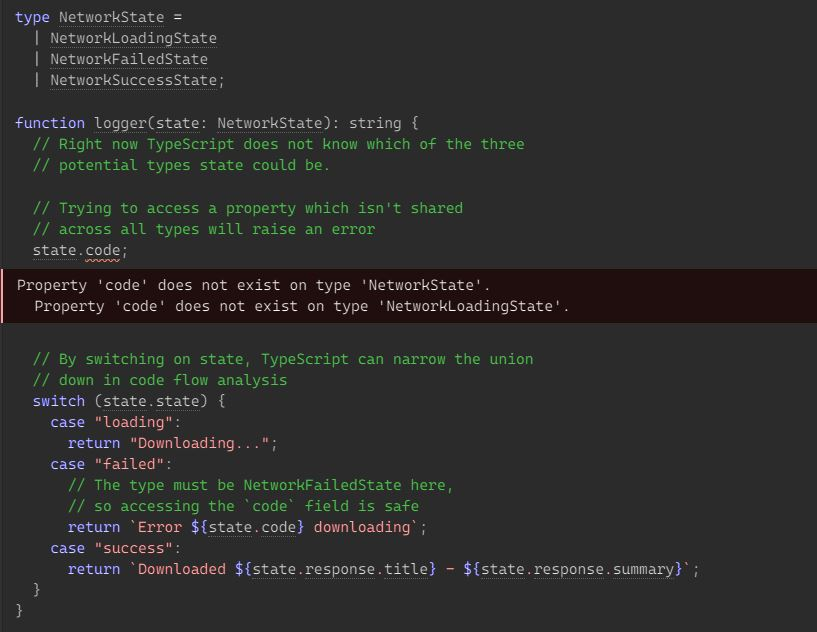
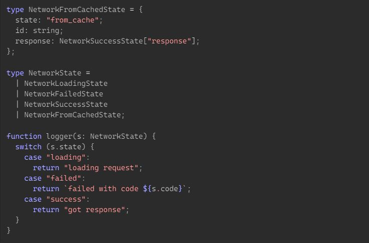
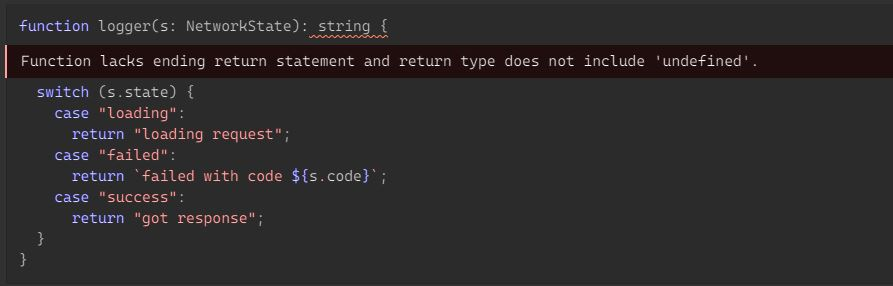

Occasionally, you’ll run into a library that expects a parameter to be either a number or a string. For instance, take the following function:
The problem with padLeft in the above example is that its padding parameter is typed as any. That means that we can call it with an argument that’s neither a number nor a string, but TypeScript will be okay with it.
In traditional object-oriented code, we might abstract over the two types by creating a hierarchy of types. While this is much more explicit,
it’s also a little bit overkill. One of the nice things about the original version of padLeft was that we were able to
just pass in primitives. That meant that usage was simple and concise. This new approach also wouldn’t help if we were just trying to use a function
that already exists elsewhere.
Instead of any, we can use a union type for the padding parameter:
A union type describes a value that can be one of several types. We use the vertical bar (|) to separate each type,
so
number | string | boolean
is the type of a value that can be a number, a string, or a
boolean.
If we have a value that is a union type, we can only access members that are common to all types in the union.
Union types can be a bit tricky here, but it just takes a bit of intuition to get used to. If a value has the type A | B, we only know for certain that it has members that both A and B have. In this example, Bird has a member named fly. We can’t be sure whether a variable typed as Bird | Fish has a fly method. If the variable is really a Fish at runtime, then calling pet.fly() will fail.
A common technique for working with unions is to have a single field which uses literal types which you can use to let TypeScript narrow down the possible current type. For example, we’re going to create a union of three types which have a single shared field.
All of the above types have a field named state, and then they also have their own fields:
| Network Loading State | Network Failed State | Network Success State |
|---|---|---|
| state | state | state |
| code | response |
Given the state field is common in every type inside NetworkState - it is safe for
your code to access without an existence check.
With state as a literal type, you can compare the value of state to the equivalent
string and TypeScript will know which type is currently being used.
| Network Loading State | Network Failed State | Network Success State |
|---|---|---|
| "loading" | "failed" | "success" |
In this case, you can use a switch statement to narrow down which type is represented at runtime:
We would like the compiler to tell us when we don’t cover all variants of the discriminated union. For example, if we add NetworkFromCachedState to NetworkState, we need to update logger as well:
There are two ways to do this. The first is to turn on --strictNullChecks and specify a return type:
Because the switch is no longer exhaustive, TypeScript is aware that the function could
sometimes return undefined. If you have an explicit
return type string, then you will get an error that the return type is actually
string | undefined. However,
this method is quite subtle and, besides,
--strictNullChecks does not always work with old code.
The second method uses the never type that the compiler uses to check for exhaustiveness:
Here, assertNever checks that s is of type never — the type that’s left after all other cases have been removed. If you forget a case, then s will have a real type and you will get a type error. This method requires you to define an extra function, but it’s much more obvious when you forget it because the error message includes the missing type name.
Intersection types are closely related to union types, but they are used very differently. An intersection type combines multiple types into one.
This allows you to add together existing types to get a single type that has all the features you need. For example,
Person & Serializable & Loggable
is a type which is all of Person and Serializable and
Loggable. That means an object of this type will have all members of all three types.
For example, if you had networking requests with consistent error handling then you could separate out the error handling into its own type which is
merged with types which correspond to a single response type.